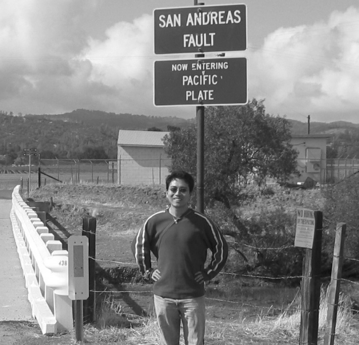

A 7.7 magnitude earthquake struck central Myanmar on Friday afternoon local time near the country’s second-largest city, Mandalay. The quake caused extensive damage across Myanmar and also toppled a skyscraper under construction in Bangkok, Thailand, more than 600 miles away. After the quake, the Myanmar military junta declared a state of emergency in six regions and confirmed more than 100 people killed and many hundreds injured, while Thai officials reported at least seven deaths and scores of people missing. A report from the United States Geological Survey (USGS) estimates that the death toll will likely exceed 1,000, and could even surpass 10,000 given the quake’s epicenter near populated areas.
Myanmar sits atop one of the most tectonically active regions in the world, along a 9,300-mile swathe of land called the Alpide Belt, which extends across the southern region of Eurasia, from the Mediterranean, eastward through Asia, and into the East Indies. The Alpide belt is one of three major earthquake zones on Earth, and is responsible for about 15 percent of all the world’s largest earthquakes, second only to the Ring of Fire in the Pacific. The belt’s tectonic activity has birthed many of the world’s most impressive mountain ranges, including the Alps, the Atlas Mountains, and the Himalayas.
Today’s quake today is similar in size and magnitude to the 1906 San Francisco earthquake.
Zhigang Peng, a seismologist at Georgia Institute of Technology in Atlanta who has studied quakes along the Alpide in Turkey, says that while Myanmar has experienced large earthquakes in the past, today's quake—followed by a magnitude 6.7 aftershock roughly 11 minutes later—is among the most powerful to hit the region in recent memory. Since 1900, at least six quakes measuring a magnitude of at least 7 have been recorded within 150 miles of Friday’s quake, according to USGS.
We spoke with Peng about the region’s seismic history, the causes of today’s quake, and what scientists know about what might be coming.

FAULT LINES:Zhigang Peng, a seismologist at Georgia Institute of Technology in Atlanta, has studied quakes along the Alpide belt in southern Eurasia, one of the most seismically active regions in the world. Here he stands beside the Pacific plate of the San Andreas Fault, an 800-mile slip-strike fault that runs from the Bay Area to the Salton Sea. The San Andreas Fault was responsible for the 1906 San Francisco earthquake, which killed an estimated 3,000 people and left half the city homeless. Photo courtesy of Zhigang Peng.
Myanmar is one of the most seismically active areas in the world. Can you tell me about the history of earthquakes in this region?
Myanmar is near the southeastern end of the Alpide Belt, and long story short, this area is a well-recognized section of the belt where earthquakes are pretty common. Most of the belt is seismically active, or was in the past. For example, the Alps are part of the system, but most of that area is not tectonically active right now even though it was in the distant past. [Recent research suggests that parts of the southern Alps may still be active.]
Of course, earthquakes of such a size as this one are rare, but they have happened. If I remember correctly, the last time a similar-sized event occurred in this region was in 1839, and it was a magnitude 8.0 earthquake. But there have been many “smaller” quakes in the area, including a magnitude 6.8 in 2011.
*What is driving all this tectonic activity? Is it the same as what is happening in other earthquake-prone places like the Ring of Fire in the Pacific Ocean, the most seismically and volcanically active region in the world?*
The area has a lot of different things going on. A big part of what is happening is that the African, Arabian, and Indian tectonic plates are moving northward and colliding with the Eurasian tectonic plate. More locally, in Myanmar, the Indian plate is colliding with the Sunda plate, which straddles the equator in the Eastern hemisphere. That’s a subduction zone, where one plate is going underneath another one. But near the edge of this boundary you get what we call a transform or strike-slip fault—one block is moving north, another block is moving south. It’s similar to the San Andreas Fault in the U.S., and actually, this quake today is somewhat similar in size and magnitude to the 1906 San Francisco earthquake.
The Ring of Fire in the Pacific is also a subduction zone, but it’s different in the sense that it’s a lot more volcanically active, and a lot of the earthquakes there are linked to the volcanism in the region.
This is a classic example of an earthquake occurring at a place where we know it’s going to happen.
How would you describe this particular earthquake?
Today's event is actually very simple. This earthquake was not a part of the mountain-building process, but occurred along a strike-slip fault in Myanmar called the Sagaing Fault.
From what I’ve seen, the event is a pretty typical continental strike-slip event. It looks like a fault section of about 200 kilometers broke in a single event near Mandalay, and it mostly propagated to the south. It was pretty shallow, probably around 10 kilometers or so deep, and because the event is so large, it took about one minute to unfold itself and produced some pretty significant shakes. I’ve seen a lot of infrastructure damage, buildings and bridges coming down. [USGS has estimated that the quake ran along a fault section that lies 6 miles (10 kilometers) deep, 124 miles long and 12 miles wide.]
Was there any inkling that this particular area was due for an event of this magnitude?
Earthquake scientists have studied this region for quite some time, and I would call this a classic example of an earthquake occurring at a place where we know it's going to happen. Of course, we don't know when—that's always the $1 million question—but you can do the math to find out whether or not it’s within an expected range of time, which we call the recurrence interval.
If we think of what happened today as a repeat of what happened in 1839, you can see that it has been almost 200 years. And we know that the slip rate—that's how much stress has been accumulating along the fault—is generally on the order of about 2 centimeters per year. If it's 2 centimeters per year, and it has been roughly 200 years, you get about 4 meters of accumulated stress. A slip of that size is enough to produce a magnitude 7 event or higher, and that’s what we observed.
What are the secondary hazards of such an earthquake?
Typically, the three secondary hazards associated with big earthquakes are landslides, fire, and tsunamis. We can rule out tsunamis because it occurred on land, and it also occurred in a region that is relatively flat, so I wouldn't expect to see major landslides. There are probably going to be small, localized fires that have the potential to get big if they aren’t contained.
But most of what I’m looking at are aftershocks. Earthquakes like this one will almost certainly be followed by aftershocks, and some of them could be large. We should expect to see other large events in the next few weeks to months. Most are going to be smaller than today’s earthquake, however, there's always a chance of a similar size event or, in the worst case scenario, an even larger event. 
Lead image: A chart showing the intensity of the earthquake. Credit: USGS